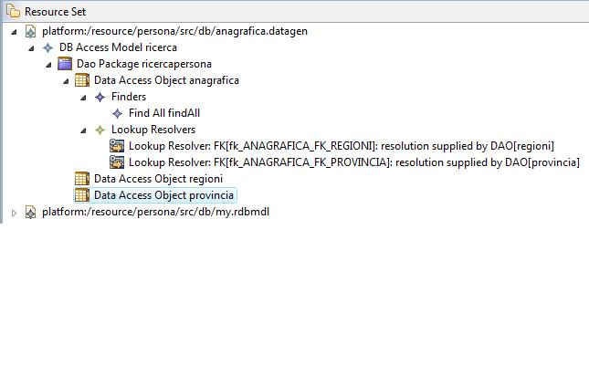
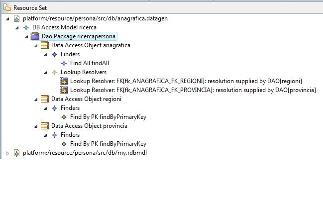

Questa guida descrive l'utilizzo della feature denominata LookupResolver per la risoluzione automatica delle associazioni N-1, tipicamente utilizzate nel caso di tabelle di decodifica.
Il LookupResolver è un costrutto associabile ad ogni DataAccessObject. Come facilmente intuibile dal nome, esso permette di risolvere i lookup associati ad una determinata tabella. Per lookup intendiamo il reperimento di elementi informativi associati in relazione N-1, spesso descritti come tabelle di decodifica. Tipicamente il lookup coinvolge almeno due tabelle:
Un esempio di tale struttura può essere quello relativo alla struttura relazionale descritta di seguito.
Nell'utilizzo classico, (ovvero senza l'impiego del LookuResolver), quando un si utilizza il DAO per accedere ai dati della tabella ANAGRAFICA, si ottiene un risultato costitutito da uno o più DTO i cui campi corrispondono (in nome e in tipo) alle colonne della tabella.
Qualora ci fosse la necessità di recuperare le informazioni estese dei due campi DESCRIZIONE_PROVINCIA e DESCRIZIONE_REGIONE, ad esempio perchè è necessario visualizzare a video la regione di residenza, sarebbe necessario effettuare altri due accessi in chiave primaria alle tabelle di decodifica, rispettivamente PROVINCIE e REGIONI. E' però possibile utilizzare il LookupResolver per:
Supponiamo di avere a disposizione il modello dello schema relazionale dell'esempio e un modello di accesso ai dati nel quale verranno inseriri i vari DAO. Definiamo pertanto tre DAO: anagrafica, provincie, regioni.
I Lookup Resolver sono elementi associabili a ciascun Data Access Object. Tutti i LookupResolver di un DAO devono essere contenuti in un elemento di tipo LookupResolvers, a sua volta contenuto nel DataAccessObject. Nel caso in esame, si suppone di dover effettuare la lookup sulle tabelle PROVINCIE e REGIONI, pertanto è necessario definire due resolver associati al dao angrafica.
Ogni resolver si compone di due properties specifiche:
Nel caso di esempio avremo pertanto:
Si osservi che, operativamente, una volta selezionata la foreign key, le possibili scelte circa il Supplier DAO si restringono ai DAO relativi alla tabella effettivamente referenziata dalla foreign-key.
Poichè la risoluzione delle decodifiche avviene tramite delega ai dao supplier è necessario che ciascun Supplier DAO definito nei vari resolver presenti il finder "findByPK". Tutti i passi appena elencati non differiscono nel caso di foreign key composite.
A fronte dell'utilizzo di un LookupProvider si ottiene un codice dei DAO leggermente differente:
findByPrimaryKey
La presenza di un LookupResolver non ha particolari effetti sulle operazioni di scrittura (insert/update), a parte il fatto che durante le operazioni di insert e update vengono utilizzati solo i valori di primo livello, ossia:
La presenza di un LookupResolver non modifica il comportamento delle operazioni di delete
Il LookupResolver è specificamente studiato per le operazioni di lettura. L'effetto principale è quello già ampiamente descritto e consiste nella differente profondità di popolamento dei DTO di risposta alla query. In particolare è però importante notare come il meccanismo di strutturazione può essere sfruttato anche nella modalità QBE.
Attualmente sussistono alcune limitazioni derivanti dall'utilizzo del LookupResolver.
findByExamples relativo alla tabella Anagrafica, non
sarà possibile utilizzare un esempio che contenga, per esempio, un filtro sul
nome della regione, ma solo sul suo identificativo)Il meccanismo di LookupResolver spesso è utilizzato per risolvere il lookup di tabelle di decodifica: questa tipologia di tabelle spesso possiedono la caratteristica di presentare una alta stabilità per quanto riguarda l'insieme dei record (es. le provincie, i comuni, ...). In queste condizioni risulta pertanto molto utile abbinare al meccanismo del LookupResolver il meccanismo di DAO cache relativamente ai DAO delle tabelle di decodifica. In questo modo l'operazione di risoluzione del lookup avviene in memoria senza accesso al DB, con un evidente miglioramento delle prestazioni. Per impostare la cache su un DAO è necessario definire i suoi dati come ALMOST_STABLE_DATA e questa operazione può essere effettuata agendo sul modello, nelle property del DAO.